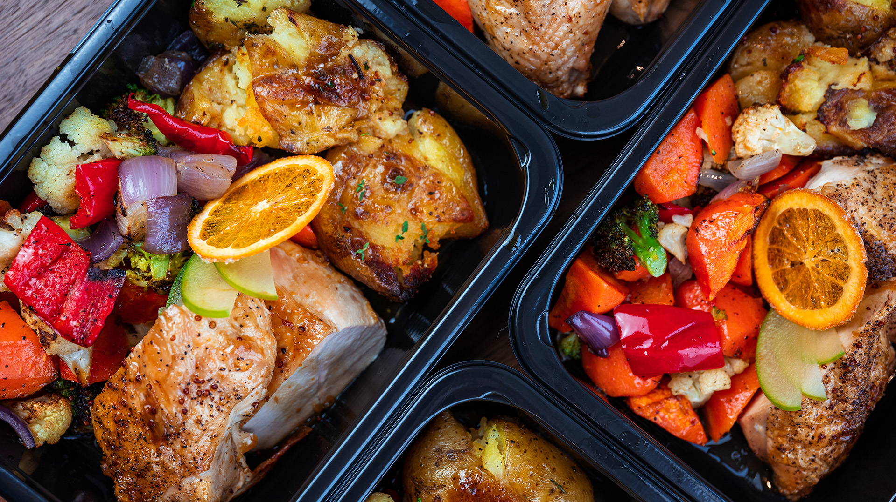

Meal Prep Mastery
Meal prepping is a game-changer for anyone looking to take control of their diet, save time, and stay consistent with their health goals. Whether you’re aiming to build muscle, lose weight, or simply eat cleaner, having a fridge stocked with ready-to-go meals can make all the difference. But for many, the idea of dedicating hours to cooking and portioning meals can feel overwhelming. The good news? With the right strategies and recipes, meal prep can be both easy and enjoyable.

Cooking with Kids
Cooking with kids is a fun and educational way to spend time together while teaching them important life skills. It sparks their creativity and encourages healthy eating habits. Plus, it makes mealtime a shared adventure the whole family can enjoy.

Superfood Smoothies
Superfood smoothies are a delicious and easy way to pack essential nutrients into your daily routine. They're perfect for boosting energy, supporting overall health, and satisfying your taste buds. With endless combinations, you can enjoy a tasty, nutrient-rich drink any time of day.

Vegetarian Meal Prep
Vegetarian meal prep is a simple and effective way to ensure you have healthy, plant-based meals ready throughout the week. It helps you stay on track with your dietary goals while exploring a variety of flavors and ingredients.

Batch Cooking Basics
Batch cooking is an easy way to ensure you have healthy meals ready throughout the week. It helps you stay organized and reduces daily kitchen stress. With a bit of planning, you can enjoy nutritious, home-cooked dishes without the hassle.

5-Minute Breakfasts
A 5-minute breakfast is a quick and easy way to start your day on a nutritious note. It ensures you get a healthy meal even on the busiest mornings. With simple ingredients and minimal prep, you can enjoy a satisfying breakfast in no time.